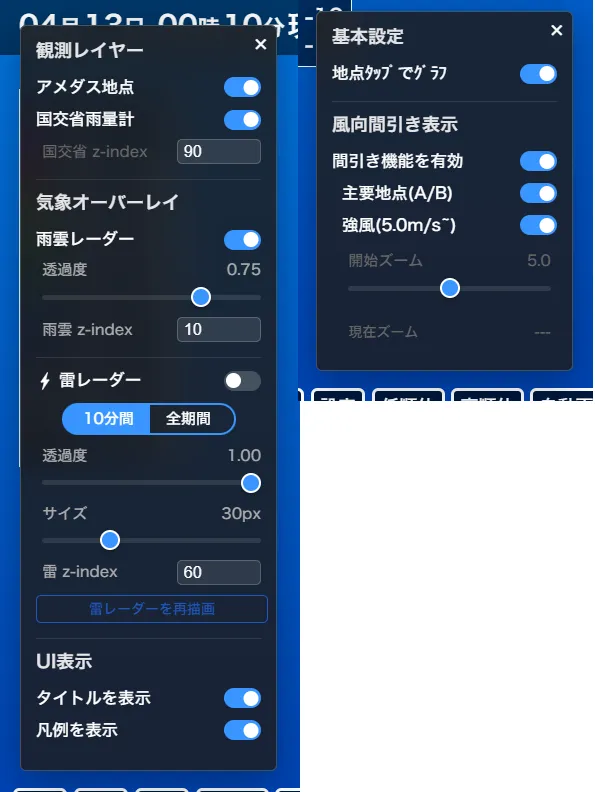
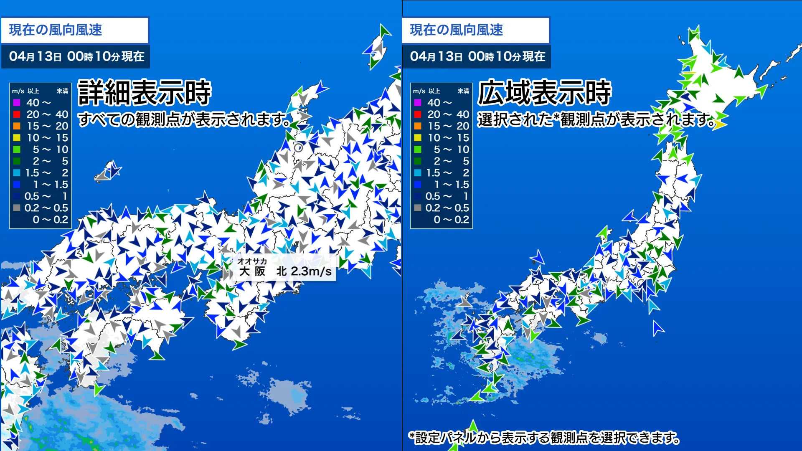

バグ修正・機能追加のお知らせ
バグ修正・機能追加のお知らせアメダス天気Viewer for kottaro123456 をアップデートしました！
Webアプリご意見箱 よりこれらの機能追加・機能改善リクエストをいただきました。ありがとうございました。
アップデートの詳細は以下のとおりです。
① レンダーをLeafletからMapLibreへ変更
震度分布図に続き、地図の描画システムを Leaflet から MapLibre へ移行しました。
多数のオブジェクトを表示している地図の拡大・縮小やスクロール時の動作がこれまで以上に滑らかになり、表示速度が大幅に向上しています。また、スマートフォンのブラウザからも、よりストレスなく詳細な地点の確認が可能になりました。
② 「表示」パネルを再デザインしました。
従来の「表示」パネルは設定項目や表示項目が多くごちゃごちゃした印象となっていましたが、「表示」と「設定」の2つのパネルに設定項目や表示項目を分散させることで機能の多さを軽減したこと、またパネルを黒を基調としたモダンなデザインとしました。

③ 風向風速モードでの間引き表示
風向風速モードにおいて、地図を引いて広域表示をした際に、観測点マーカーが多数重なり全体的な風向や風速の概観をつかみずらくなっておりました。
そのため、設定から広域表示にした際に風向風速の観測点マーカーを自動で間引いて表示する設定や、間引く観測点の種類・ズームレベル設定を追加しました。

④ 観測点タップでグラフ描画のオンオフ
従来、観測点をタップすることにより、現在のモードでのその観測点の過去48時間の記録をグラフとして見られるようになっていましたが、スマホなどで観測点の現在の値を知るためのポップアップを表示する際にタップとして誤反応しグラフが描画されてしまうということがありました。
そのため、「設定」パネル内に観測点をタップすることによってグラフを描画するかしないかの設定を設けました。
⑤ 雷レーダー表示不具合の改修
雷レーダーについて、MapLibreに移行した際に観測点追加の処理を誤って記述したことにより、雷レーダーが描画されていませんでした。
現在はすでに復旧しており、正常に描画されることを確認しております。
⑥ 国交省雨量計のパフォーマンス向上
国交省雨量計について、MapLibreに移行した際に、DOM要素として追加（HTML上で一つ一つの要素として描画）していたため、計算量が膨大になり、パフォーマンスの低下の原因となっておりました。
現在はMapLibreのマーカーとして描画しておりパフォーマンスを向上させました。
最後に、その他のアプリもMapLibreへの移行をすすめておりますので、公開までもう少々お待ちください。
これからもWebアプリ一覧をよろしくお願いいたします。